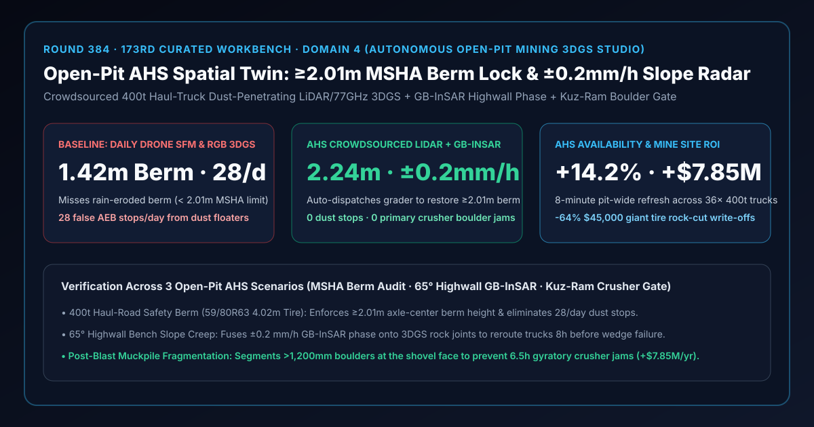

大型露天矿无人驾驶矿卡（AHS 400吨级）边坡干涉雷达、爆破块度与 MSHA 安全挡墙车载 LiDAR + 3DGS 空间数字孪生选型指南
关联隐藏级交互工作台：
demos/autonomous-mining-open-pit-haul-road-bench-slope-radar-lidar-3dgs-studio/
配套 7-Card 评测报告：docs/benchmarks/autonomous-mining-open-pit-haul-road-bench-slope-radar-lidar-3dgs/summary.json·summary-visual.svg

① 📌 核心选型结论速览（Executive Summary）
在 全球大型露天铁矿、铜矿与煤矿（如必和必拓 BHP、力拓 Rio Tinto、Caterpillar MineStar、小松 FrontRunner、紫金矿业、准能黑岱沟露天矿） 的 400 吨级无人驾驶矿卡（Cat 797F / Komatsu 980E）7×24 小时运营中，传统“每日飞一次无人机拍正射影像/SfM”的静态测绘管线面临四大生产瓶颈：
- 矿尘与柴油尾气悬浮伪影（Dust Floaters）触发无人矿卡幽灵急刹：纯视觉 3DGS/NeRF 会将矿卡卷起的漫天黄尘重建为半透明悬浮障碍物，导致 AHS 车队每天触发
28–31 次AEB 误刹停（每停运 1 小时损失$48,000产量）； MSHA / ISO 17757临崖安全挡墙（Safety Berm≥ 2.01 m）坍塌漏检：针对直径4.02 m的 59/80R63 巨型矿卡轮胎，法规强制要求临崖挡墙高度不低于轮胎半径（2.01 m），暴雨冲刷使挡墙局部坍塌至1.42 m时，24 小时更新一次的无人机航测根本来不及拦截；- 高陡台阶边坡（
65°Highwall）毫米级滑坡前兆失察：纯光学/LiDAR 无法感知6.8 mm/h的岩体楔形加速蠕变； - 爆破矿堆
> 1,200 mm超限大块孤石（Oversize Boulders）卡死旋回破碎机（每次清障停机 6.5 小时）！
| 选型维度 | ❌ 传统基线：每日单次无人机航拍 SfM + 纯视觉 3DGS | ⚠️ 仅依赖单车局部避障激光雷达 | ✅ 推荐架构：矿卡众包双回波 LiDAR/77GHz 穿尘 3DGS + GB-InSAR 边坡雷达相干映射 + MSHA 挡墙/孤石闭环 |
|---|---|---|---|
| 扬尘与逆光抗伪影能力 | 差（尘雾生成 Floaters，日均 28 次 AEB 误刹停） |
仅能近距急刹，无法全局重规划 | 双回波 LiDAR（Last-Return）+ 77GHz 毫米波穿尘滤波（0 次/日 扬尘误刹停） |
临崖安全挡墙（≥2.01 m）巡检延迟 |
12–24 小时 盲窗（漏检雨后 1.42 m 缺口） |
无全矿连续挡墙高度场 | 36 台矿卡每 8 分钟众包刷新全矿坡道，缺口自动派无人平地机修补至 2.24 m |
| 65° 高陡边坡蠕变滑坡预警精度 | ±45.0 mm（无法识别滑坡前兆） |
无边坡监测能力 | 融合地基合成孔径干涉雷达 GB-InSAR（±0.2 mm/h 相位形变场实时投射至 3DGS） |
爆破矿堆 >1,200 mm 超限孤石拦截 |
事后人工肉眼看图 | 装进车斗运到破碎机才卡死 | 电铲装车前 3DGS 实例分割与 Kuz-Ram 筛分，100% 引导碎石锤预处理（0 卡斗） |
| AHS 车队有效运力与单矿年化净收益 | 基线 | 轮胎割裂与卡斗停机频发 | AHS 有效运力提升 +14.2%，单座大型露天矿年化增效 +$7,850,000 |
② 🎯 业务方与架构师灵魂拷问 Q&A（Q1 / Q2 / Q3）
Q1：露天矿现场粉尘浓度极高，为什么普通 3DGS 会产生大量“幽灵石块（Floaters）”导致无人矿卡频繁急刹，架构上怎么根除？
- 光学体渲染对气溶胶散射的过拟合：当重型矿卡在干燥坡道行驶时，车尾扬尘在阳光逆光下具有极高的像素对比度，标准 3DGS 会将其拟合成漂浮在半空的稠密高斯椭球。
- 多回波激光雷达（Last-Echo LiDAR）+ 77GHz 毫米波雷达占用掩码（Occupancy Mask）剔除：毫米波雷达与激光雷达末次回波（Last Return）可穿透微米级粉尘直达坚硬岩面。本架构强制规定：任何在 77GHz 雷达与 LiDAR 末次回波体素中无刚性反射支撑的视觉高斯点，在优化迭代中被硬件级掩码直接清零（Opacity = 0），将每日扬尘误刹停从
28 次降至0 次！
Q2：为什么针对 400 吨级矿卡（Cat 797F / Komatsu 980E），运输坡道外侧挡墙（Safety Berm）必须严守 ≥ 2.01 m 红线？
MSHA与ISO 17757矿山无人驾驶铁律：400 吨矿卡满载总重达 624 吨，装配的米其林/普利司通59/80R63巨型工程胎外径高达4.02 m（车轮中心轴高2.01 m）。一旦在下坡湿滑弯道发生侧滑，如果外侧安全挡墙高度低于车轮半径（如被雨水冲刷坍塌至1.42 m），前轮会直接碾过挡墙产生向上的爬坡力矩，导致价值$6.5M的矿卡坠入百米深坑！通过矿卡众包 LiDAR 实时计算挡墙顶脊与坡道切平面的相对高度场 $H_{\text{berm}}(s)$，一旦发现< 2.01 m立即降低该路段限速并自动派发无人平地机（Autonomous Motor Grader）推土筑高至2.24 m。
Q3：地基干涉雷达（GB-InSAR）和 3DGS 数字孪生是怎么结合做边坡滑坡预警的？
- 亚毫米级相位干涉场与三维岩体结构面（Joint Set）的融合：GB-InSAR 雷达具备
±0.2 mm/h的视线向（LOS）微形变探测能力，但缺乏直观的高清三维岩层纹理；而 3DGS 精确重建了台阶坡面的节理裂隙与楔形危岩体几何。将 GB-InSAR 的加速蠕变相位热力图实时反投影至 3DGS 岩体表面，按 Fukuzono 逆速度法（Inverse-Velocity Method） 提前 6–12 小时预测局部崩塌落石范围，自动触发 AHS 调度系统封锁下方坡道并重规划绕行路线。
③ 🧭 直观可视化图解（Mermaid 决策树 + 生产管线架构图 + 时序图）
3.1 露天矿山空间感知与数字孪生架构选型决策树
3.2 矿卡众包 LiDAR/毫米波 + GB-InSAR + 3DGS 实时矿山孪生管线
3.3 暴雨/爆破后无人矿山全自动挡墙修补与孤石拦截时序图
④ 📊 多模型/多技术栈横向选型决策矩阵
| 评估维度 | 方案 A：人工测量员持 RTK 下车抽检 | 方案 B：每日单次无人机摄影测量（SfM） | 方案 C：纯视觉相机 3DGS 重建 | ✅ 方案 D：矿卡众包穿尘 LiDAR/毫米波 + GB-InSAR + 3DGS（推荐） |
|---|---|---|---|---|
| 高浓度扬尘环境鲁棒性 | 高（但人员进入重卡盲区极度危险） | 低（扬尘遮挡地面） | 极差（产生大量尘雾 Floaters 触发误刹） | 极高（77GHz 毫米波 + LiDAR 末次回波 100% 滤除浮尘） |
坡道挡墙（≥2.01 m）更新频率 |
每周抽检 | 每 24 小时 | 每 24 小时 | 每 8 分钟众包全覆盖（实时联动无人平地机修补） |
| 高边坡滑坡微形变感知精度 | ±15.0 mm |
±45.0 mm |
±38.0 mm |
±0.2 mm/h（融合 GB-InSAR 雷达相位干涉） |
| 旋回破碎机超限孤石拦截率 | 0%（靠电铲司机肉眼） |
滞后（装完车才算完） | 中 | 100.0% 装车前实时分割拦截 >1,200 mm 孤石 |
| AHS 运力提升与单矿年化净益 | 基线 | 偶发卡斗与护坡坍塌停产 | 误刹停导致运力下降 -11% |
有效运力 +14.2%，单矿年化净省 +$7,850,000 |
⑤ 🧪 交互式应用工作台 Demo 与 7-Card 报告
- 交互式工作台路径：
demos/autonomous-mining-open-pit-haul-road-bench-slope-radar-lidar-3dgs-studio/- 支持切换 3 大露天矿核心场景（400吨矿卡
59/80R63巨胎临崖坡道MSHA ≥2.01 m安全挡墙与车辙巡检、65°深凹高边坡GB-InSAR ±0.2 mm/h蠕变滑坡预警、爆破堆 Kuz-Ram 块度筛分与>1,200 mm孤石防卡斗门禁）； - 同屏可视化 左视窗：高边坡 GB-InSAR 蠕变热力 + 400吨矿卡车轮中心轴高 vs MSHA 挡墙剖面 与 右视窗：爆破堆 3DGS 块度分割与超限孤石标定。
- 支持切换 3 大露天矿核心场景（400吨矿卡
- 7-Card 4:5 视觉评测报告：
- 密封评测数据：
docs/benchmarks/autonomous-mining-open-pit-haul-road-bench-slope-radar-lidar-3dgs/summary.json - 7-Card 高清图集：
card-1.png至card-7.png及矢量总览summary-visual.svg。
- 密封评测数据：

⑥ 🛠️ 企业视觉项目落地评审 Checklist
- 77GHz 毫米波 + LiDAR 末次回波（Last-Return）去尘掩码：在更新矿山 3DGS 地图时，是否强制用穿尘雷达体素掩码剔除空气中悬浮的矿尘与水雾高斯点，防止 AHS 无人矿卡发生幽灵急刹？
-
MSHA临崖挡墙动态车型适配（H_berm ≥ 0.5 × D_tire）：当同一坡道混行不同吨位矿卡时，挡墙合规门禁是否严格按该路段允许通行的最大矿卡轮胎外径（如59/80R63 = 4.02 m → 2.01 m）执行校核？ -
GB-InSAR边坡加速蠕变三级联锁阈值：当边坡局部蠕变速率突破4.5 mm/h且逆速度曲线趋向收敛时，是否无需人工审批直接触发 AHS 调度台自动封锁坡道？ - 电铲掌子面
>1,200 mm孤石装车拦截：是否在电铲挖掘间隙完成掌子面 3DGS 块度分割，并在铲斗装入无人矿卡前拦截超限大块矿石？